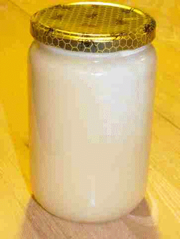
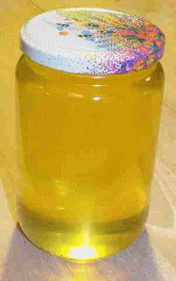
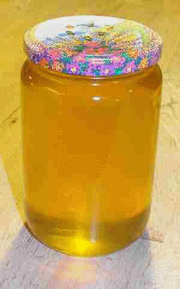

Miel de Lorraine
Je suis apiculteur !
Petit producteur, je vous propose du miel de Toul.
Mes ruchers sont situés en Lorraine, dans le Toulois (Toul est à environ 20 km de Nancy, en Meurthe et Moselle [54]).
Pour peu que vous habitiez dans le Toulois ou à Nancy, je peux vous livrer, si vous le souhaitez.
Produit avec soin dans un amoureux respect de l'abeille et de l'environnement, il vous fera vite oublier les miels de supermarché d'origine chinoise (ou d'ailleurs), pour un prix très proche et même souvent moins cher.
#apiculture #artisanal #naturel #lorraine #miel
Miel crémeux
12€
Prix au Kg
Fleurs:
pissenlit, aubépine, colza, fruitiers
Disponible fin Mai
Miel d'acacia
15€
Prix au Kg
Fleurs:
acacia
Disponible mi-Juin
Miel d'été
12€
Prix au Kg
Fleurs:
ronce, mélilot, tilleul, trèfle, chataîgnier
Disponible fin Juillet
🔔
Les fleurs sont mentionnées à titre indicatif, j'ai fait faire une analyse de mon miel d'été en 2007
et en 2014.
Toutefois il ne s'agit, évidemment, pas d'un engagement contractuel (les abeilles font ce qu'elles
veulent) !
Il n'y a pas de miel d'acacia chaque année, parfois les gels tardifs font de gros dégats sur les
bourgeons floraux, d'autres fois, en pleine floraison, de violents orages détruisent les fleurs...